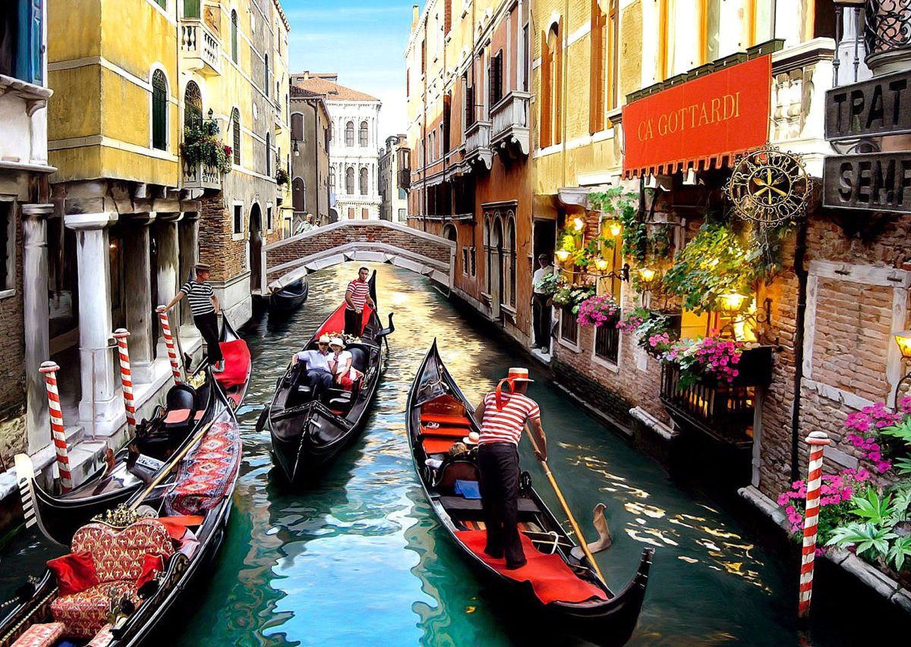

Explore a Itália
Pontos Turísticos
Coliseu de Roma
O Coliseu é um dos monumentos mais impressionantes da Roma Antiga e símbolo da história romana.
"Pisar nesse lugar histórico foi surreal. A grandiosidade é indescritível!" – Ana C.

Canais de Veneza
Veneza é famosa por seus canais e construções históricas, proporcionando passeios românticos de gôndola.
"Passear de gôndola ao pôr do sol foi um sonho realizado!" – Pedro L.

Toscana
Região encantadora com vinhedos, campos verdes e vilarejos medievais.
"A Toscana é paz, vinho e paisagens de tirar o fôlego." – Júlia M.
Cultura Italiana
Língua
Curiosidades
Culinária
Pratos típicos incluem pizza, massas, risotos e sobremesas como tiramisù. O azeite e o vinho são muito valorizados.